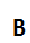
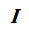

- formatting -
Paragraph <p>
Preformatted <pre>
- color -
Red
Blue
Green
Black
Yellow
- size -
Very small
A bit small
Normal
Medium-large
Big
Very big
Maximum
- font -
Arial
Arial Black
Courier New
Times New Roman
 
This is text editor